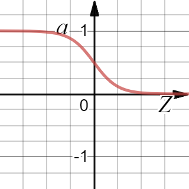
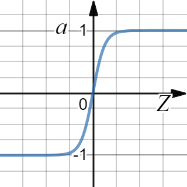
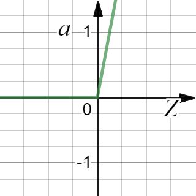
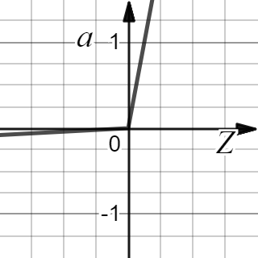

在使用神经网络时，需要决定使用哪种激活函数作用在隐藏层上，哪种用在输出节点上。普通的激活函数有sigmoid, tanh, Relu和Relu的优化版Leaky Relu。
为什么需要非线性激活函数
为什么神经网络需要非线性激活函数？事实证明：要让你的神经网络能够计算出有趣的函数，你必须使用非线性激活函数，如果是用线性激活函数或者叫恒等激励函数，那么神经网络只是把输入线性组合再输出。
事实证明，如果你使用线性激活函数或者没有使用一个激活函数，那么无论你的神经网络有多少层一直在做的只是计算线性函数，所以不如直接去掉全部隐藏层。事实证明如果你在隐藏层用线性激活函数，在输出层用sigmoid函数，那么这个模型的复杂度和没有任何隐藏层的标准Logistic回归是一样的。
只有一个地方可以使用线性激活函数，就是你在做机器学习中的回归问题。举个例子，比如你想预测房地产价格，目标结果就不是二分类任务0或1，而是一个实数，从0到正无穷。如果目标是个实数，那么在输出层用线性激活函数也许可行，你的输出也是一个实数，从负无穷到正无穷。
总而言之，不能在隐藏层用线性激活函数，可以用ReLU或者tanh或者leaky ReLU或者其他的非线性激活函数，唯一可以用线性激活函数的通常就是输出层；除了这种情况，会在隐层用线性函数的，除了一些特殊情况，比如与压缩有关的，那方面在这里将不深入讨论。在这之外，在隐层使用线性激活函数非常少见。因为房价都是非负数，所以我们也可以在输出层使用ReLU函数这样你的输出结果都大于等于0。
sigmoid

$a=\frac{1}{1+e^x}$sigmoid激活函数是之前在学习逻辑回归的时候使用的激活函数，但它是一个基本不使用的激活函数，tanh函数（者双曲正切函数）是总体上都优于sigmoid函数的激活函数。我们只有在二分类任务中会使用，因为在二分类的问题中，对于输出层，目标的值是0或1，所以想让预测的数值介于0和1之间，而不是在-1和+1之间。所以需要使用sigmoid激活函数。
导数
其具体的求导如下：
$\frac{d}{dz}g(z) = {\frac{1}{1 + e^{-z}} (1-\frac{1}{1 + e^{-z}})}=g(z)(1-g(z))$注：
当$z=10$或$z=-10$ $\frac{d}{dz}g(z)\approx0$
tanh

$a=\frac{e^x-e^{-x}}{e^x+e^{-x}}$事实上，tanh函数是sigmoid的向下平移和伸缩后的结果。对它进行了变形后，穿过了点(0, 0)，并且值域介于+1和-1之间。
结果表明，如果在隐藏层上使用tanh函数效果总是优于sigmoid函数。因为函数值域在-1和+1的激活函数，其均值是更接近零均值的。在训练一个算法模型时，如果使用tanh函数代替sigmoid函数中心化数据，使得数据的平均值更接近0而不是0.5.
sigmoid函数和tanh函数两者共同的缺点是，在z特别大或者特别小的情况下，导数的梯度或者函数的斜率会变得特别小，最后就会接近于0，导致降低梯度下降的速度。
导数
其具体的求导如下：
$g(z)=\frac{e^x-e^{-x}}{e^x+e^{-x}}$ $\frac{d}{{d}z}g(z) = 1 - (tanh(z))^{2}$注：
当$z=10$或$z=-10$ $\frac{d}{dz}g(z)\approx0$
Relu

$a=\max\left(0,\ x\right)$在机器学习另一个很流行的函数是：修正线性单元的函数（ReLu）。只要是正值的情况下，导数恒等于1，当是负值的时候，导数恒等于0。从实际上来说，当使用的导数时，z=0的导数是没有定义的。但是当编程实现的时候，z的取值刚好等于0.00000001，这个值相当小，所以，在实践中，不需要担心这个值，是等于0的时候，假设一个导数是1或者0效果都可以。
这有一些选择激活函数的经验法则：
如果输出是0、1值（二分类问题），则输出层选择sigmoid函数，然后其它的所有单元都选择Relu函数。
这是很多激活函数的默认选择，如果在隐藏层上不确定使用哪个激活函数，那么通常会使用Relu激活函数。有时，也会使用tanh激活函数，但Relu的一个优点是：当z是负值的时候，导数等于0。
导数
$g(z)^{'}= \begin{cases} 0& \text{if z < 0}\\ 1& \text{if z > 0}\\ undefined& \text{if z = 0} \end{cases}$注：通常在z=0的时候给定其导数1,0；当然z=0的情况很少
Leaky Relu

$a=\max\left(0.01x,\ x\right)$这里也有另一个版本的Relu被称为Leaky Relu。当是负值时，这个函数的值不是等于0，而是轻微的倾斜，这个函数通常比Relu激活函数效果要好，尽管在实际中Leaky ReLu使用的并不多。
两者的优点是：
第一，在的区间变动很大的情况下，激活函数的导数或者激活函数的斜率都会远大于0，在程序实现就是一个if-else语句，而sigmoid函数需要进行浮点四则运算，在实践中，使用ReLu激活函数神经网络通常会比使用sigmoid或者tanh激活函数学习的更快。
第二，sigmoid和tanh函数的导数在正负饱和区的梯度都会接近于0，这会造成梯度弥散，而Relu和Leaky ReLu函数大于0部分都为常数，不会产生梯度弥散现象。(同时应该注意到的是，Relu进入负半区的时候，梯度为0，神经元此时不会训练，产生所谓的稀疏性，而Leaky ReLu不会有这问题)
在ReLu的梯度一半都是0，但是，有足够的隐藏层使得z值大于0，所以对大多数的训练数据来说学习过程仍然可以很快。
导数
$g(z)=\max(0.01z,z)$ $g(z)^{'}= \begin{cases} 0.01& \text{if z < 0}\\ 1& \text{if z > 0}\\ undefined& \text{if z = 0} \end{cases}$注：通常在z=0的时候给定其导数1,0.01；当然z=0的情况很少。
总结
概括一下不同激活函数的过程和结论。
sigmoid激活函数：除了输出层是一个二分类问题基本不会用它。
tanh激活函数：tanh是非常优秀的，几乎适合所有场合。
ReLu激活函数：最常用的默认函数，如果不确定用哪个激活函数，就使用ReLu或者Leaky ReLu。$g(z)=\max(0.01z,z)$为什么常数是0.01？当然，可以为学习算法选择不同的参数。
在选择自己神经网络的激活函数时，有一定的直观感受，在深度学习中的经常遇到一个问题：在编写神经网络的时候，会有很多选择：隐藏层单元的个数、激活函数的选择、初始化权值……这些选择想得到一个对比较好的指导原则是挺困难的。
鉴于以上三个原因，以及在工业界的见闻，提供一种直观的感受，哪一种工业界用的多，哪一种用的少。但是，自己的神经网络的应用，以及其特殊性，是很难提前知道选择哪些效果更好。所以通常的建议是：如果不确定哪一个激活函数效果更好，可以把它们都试试，然后在验证集或者发展集上进行评价。然后看哪一种表现的更好，就去使用它。
为自己的神经网络的应用测试这些不同的选择，会在以后检验自己的神经网络或者评估算法的时候，看到不同的效果。如果仅仅遵守使用默认的ReLu激活函数，而不要用其他的激励函数，那就可能在近期或者往后，每次解决问题的时候都使用相同的办法。